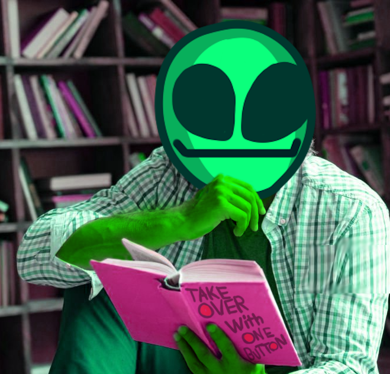

About Us
Get to know the mastermind behind this project!

Who We Are
Green Guys Green Games is a game recommendation service that will make you
green with envy, about not owning all these amazing green games of course.
It's simple, we like it green! Aliens, Grass, Asparagus, We’ll love it all.
We know you want the green games, so we make sure you get the BEST green games that'll last you through the winter!
Our Story
Our team of one person always had a distinct love for all things green.
It being one of the most creative colors, there was a natural fondness to that
magnificent hue. Naturally, another fixation arose, video games.
The vast world of video games feels like an endless expanse of remarkable
experiences, from the indie to the AAA. So naturally a question arose while the creator scratched his green chin,
“could it be possible to combine the universal love for green, and the newly
conjured love of video games.”
Naturally, this led to this disgusting chimera of a website, as it seems that “green gamers” are all over the world! And here is where we collect, build, expand, grow, forever. Go Green or Go Home.
(Note: our team would like to clarify that the “Go Green” slogan is
not related to the environmentally friendly "GREEN" movement.
In fact we don't
enjoy nature much,
it distracts from playing green games.)
Hawks also attacked my house once.
thats also a factor i guess
Wanna hear my favorite song?

CLICK